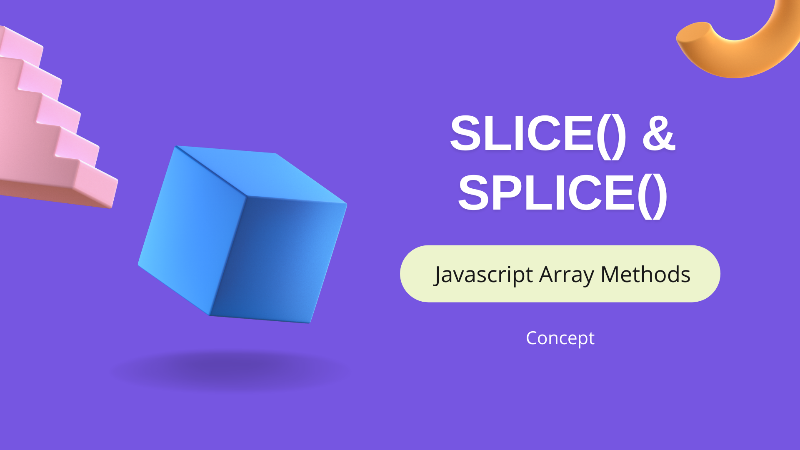

Slice() & Splice() Array methods in Javascript.
slice[startIndex, endIndex)
Slice method is used to extract the part of array based on the start and end indexes passed as the parameter.
It returns the extracted part and does not modify the original arrayThe endIndex is optional, if not given it returns the elements till the end of the array as we can see in the example below.
let arr = ['a', 'b', 'c', 'd' , 'e'];
console.log(arr.slice(2)); // Output: [ 'c', 'd', 'e' ]
On the other hand if the endIndex is passed then the extracted part of array is returned right from the startIndex to the endIndex-1.
let arr = ['a', 'b', 'c', 'd' , 'e'];
console.log(arr.slice(2, 4)); // Output: [ 'c', 'd' ]
Negative index means that the index is starting from the right hand side. See the example below.
let arr = ['a', 'b', 'c', 'd' , 'e'];
console.log(arr.slice(-2, 4)); // Output: [ 'd' ]
console.log(arr.slice(-2)); // Output: [ 'd', 'e' ]
console.log(arr.slice(1, -2)); // Output: [ 'b', 'c' ]
Note:
In above example the index starts from -2 which is the second element from the right end, and goes till the (4-1)th index from the left end. Hence, the output is 'd'.
In the second example, the start index is -2 which is again the second element from the right end and since the endIndex is not given it takes all the remaining element from -2 to the end of the array(left → right).
In the third example, the index starts from index 1 and ends at index -3 which is the third element from the right end. (Why -3? because we know it goes uptil endIndex -1 hence, it is (-2-1) which is -3).
splice(startIndex, deleteCount, itemN)
Splice() method is used to change the content of an existing array by deleting, adding or replacing elements in place.
Lets understand the parameters:
* startIndex states the starting index from where the deletion or insertion has to take place.
* deleteCount is the number of elements to delete from the startIndex(inclusive)
* after the elements are deleted the number of items provided as itemN is inserted into the array in place.
Splice() method returns the deleted items from the array, but it also modifies the original array according to the rules, If no element is deleted then an empty array is returned.Examples Codes:
* In the below example, startIndex is 1 and the deleteCount is also 1, so the splice() method will now count and delete 1 element from the startIndex which is inclusive and return in an array. Here, b is deleted and the item z is added at the index 1.
let arr = ['a', 'b', 'c', 'd' , 'e'];
console.log(arr.splice(1, 1, 'z'));
console.log(arr);
// Output:
[ 'b' ]
[ 'a', 'z', 'c', 'd', 'e' ]
In the below example, startIndex is 1 and the deleteCount is also 1, so the splice() method will now count and delete 1 element from the startIndex which is inclusive and return in an array. Here, b is deleted and the items y and z are added at the index 1 and 2 respectively.
let arr = ['a', 'b', 'c', 'd' , 'e'];
console.log(arr.splice(1, 1, 'y', 'z'));
console.log(arr);
// Output:
[ 'b' ]
[ 'a', 'y', 'z', 'c', 'd', 'e' ]
In the below example, startIndex is 1 and the deleteCount is 2, so the splice() method will now count and delete 2 elements from the startIndex which is inclusive and return in an array. Here, b and c are deleted and the items y and z are added at the index 1 and 2 respectively.
let arr = ['a', 'b', 'c', 'd' , 'e'];
console.log(arr.splice(1, 2, 'y', 'z'));
console.log(arr);
// Output:
[ 'b', 'c' ]
[ 'a', 'y', 'z', 'd', 'e' ]
Some more self-explanatory examples:
let arr = ['a', 'b', 'c', 'd' , 'e'];
console.log(arr.splice(3, 2));
console.log(arr);
// Output:
[ 'd', 'e' ]
[ 'a', 'b', 'c' ]
#####################################
let arr = ['a', 'b', 'c', 'd' , 'e'];
console.log(arr.splice(3, 0, 'r', 's'));
console.log(arr);
// Output:
[]
['a', 'b', 'c', 'r', 's', 'd', 'e']
Points to remember about splice()
* If the startIndex is greater than the length of the array then the start is set equal to the length of the array and no element is deleted or removed. Hence, acts as na adding function and adds as many elements provided in the itemN.
* If deleteCount is 0 or negative, then no elements are removed. In this case we should specify at least one new value.
* If we do not specify any elements, splice() will only remove elements from the array based on the deleteCount(only if it is greater than 0).